PAN YAO / PAINTING
Selected Works
2023–2025 / 07
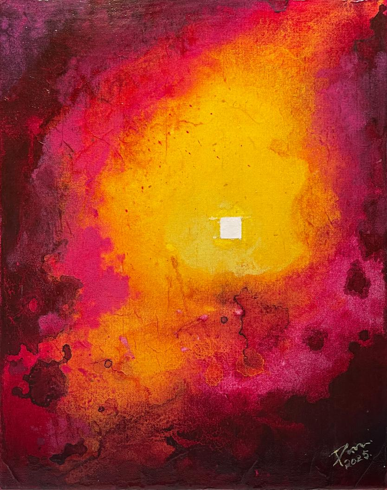
Blazing Field / 炙域2025 / Mixed media on canvas / 40 × 30 cm
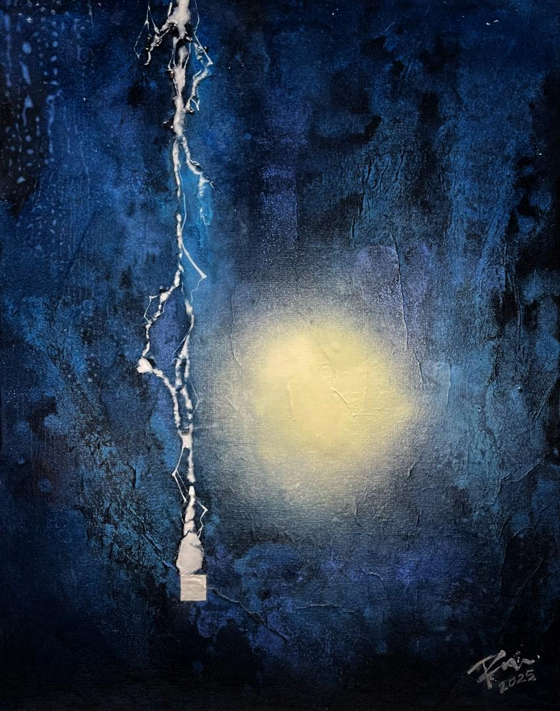
Rift / 裂隙2025 / Mixed media on canvas / 40 × 30 cm
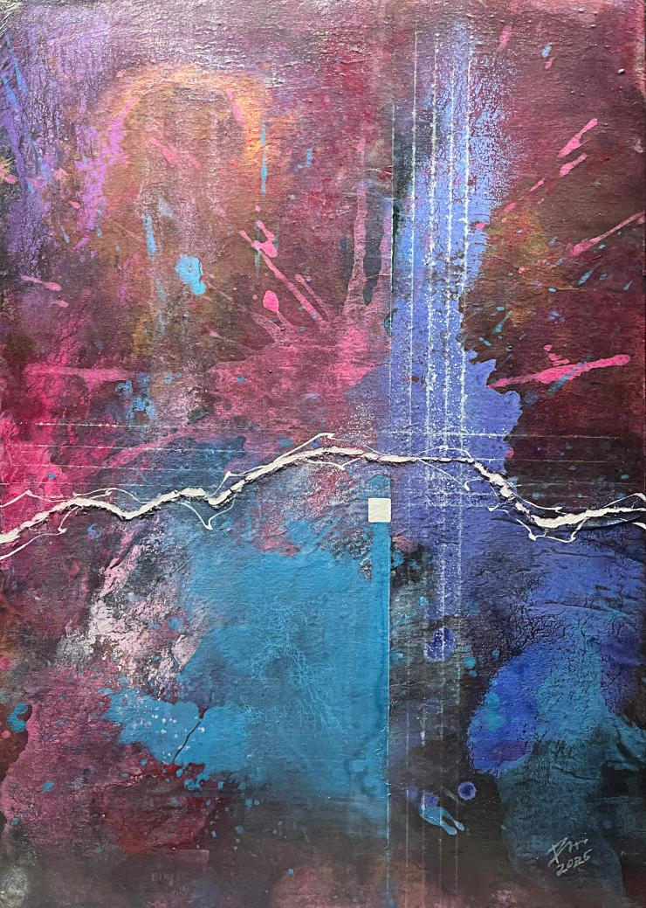
Weave / 編織2025 / Mixed media on canvas / 70 × 50 cm
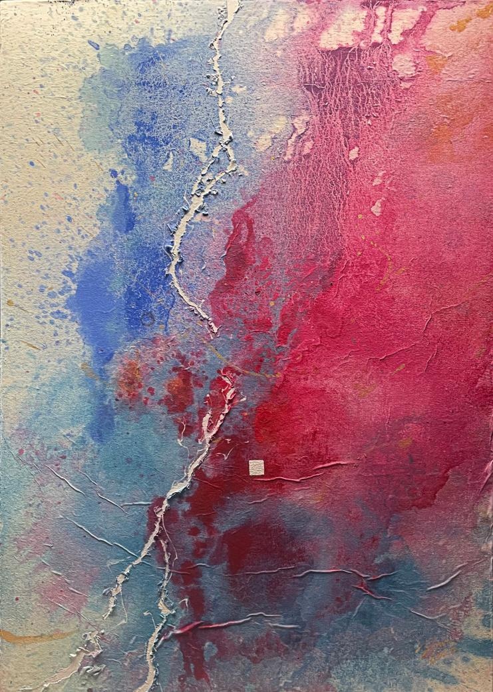
Ming — Collision / 明—対撞2025 / Mixed media on canvas / 70 × 50 cm
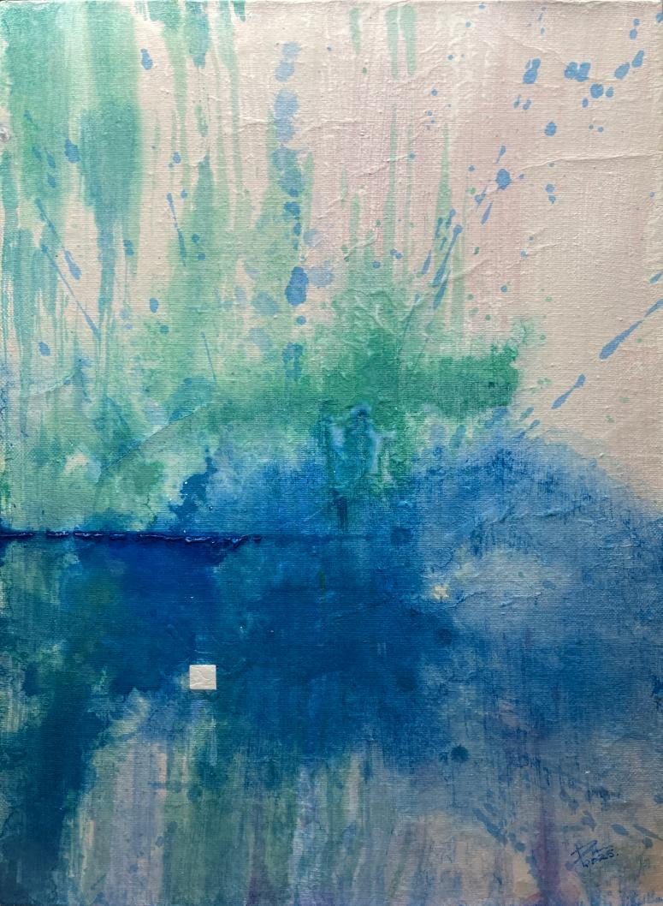
Ming — Awareness / 明—覚知2025 / Mixed media on canvas / 70 × 50 cm
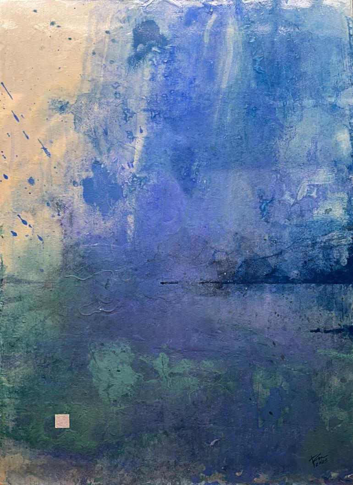
Ming — Self-Observation / 明—自観2025 / Mixed media on canvas / 70 × 50 cm
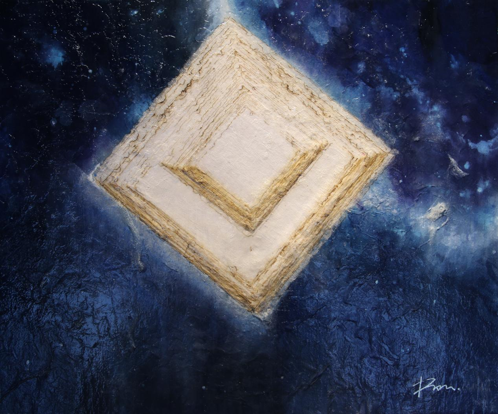
Home / 家園2023 / Mixed media on canvas / 45.5 × 38 cm
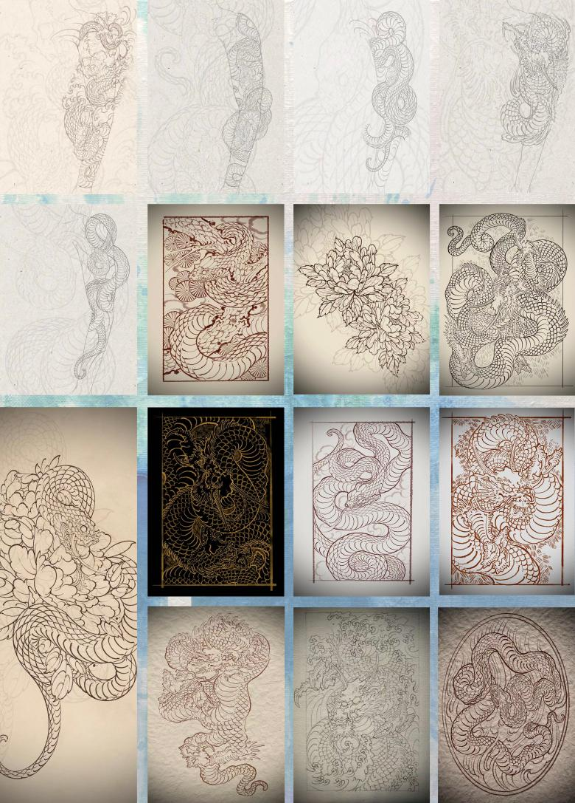
Early Line and Design Studies2010–2022 / Ink, pencil, and digital drawing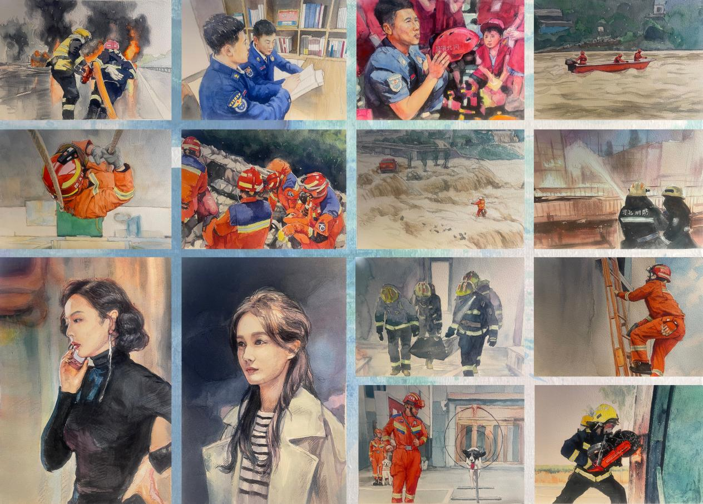
Watercolor Studies2010–2022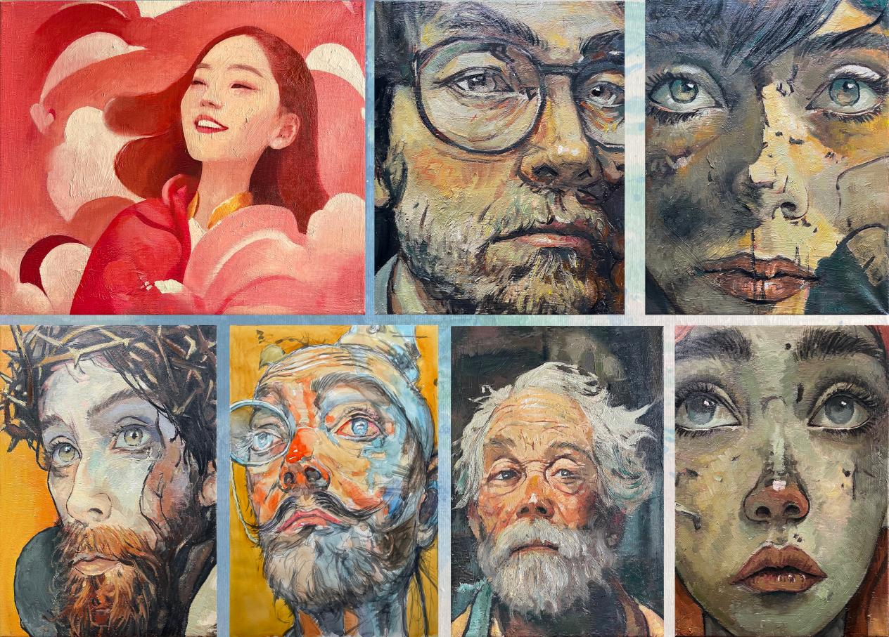
Oil Studies2010–2022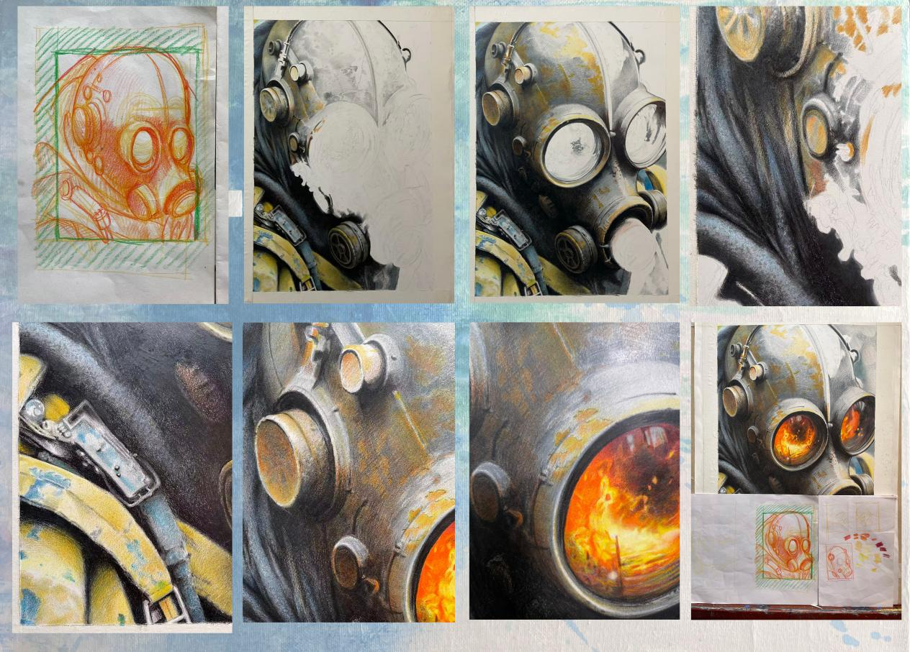
Colored-Pencil Studies2010–2022